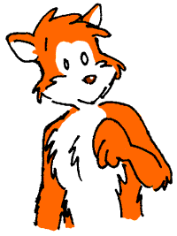
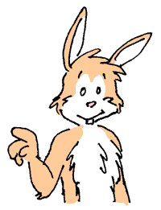

Clarity, lucidity, transparency... that old gag.
Aside from that, Limpidity is a comic strip about a fox and a bunny who live in the suburbs. Morton, the fox, and Max, the bunny, are the two main characters. The comic is currently updated sporadically, but the archive contains over 7 years of strips.
The strip takes place in the suburbs, although as regular readers on the Internet know, this is no ordinary suburb. It's where politicians go berserk after the elections, banks offer robbers free checking, wearing a bucket on the head becomes fashionable overnight, aliens land for burgers at the drive-thru, and television is... well, television!

While Morton Fox or Morty certainly isn't reckless and irresponsible, he isn't completely grounded in this reality either and thus is prone to ending up in quite a few surreal episodes in the comic strip. He's also a bit sloppy and doesn't always clean up after himself. In his spare time, he works on quite a few projects in the garage and around the home though not with too much success. On weekdays, he works at a media/entertainment company in the research/writing department, occasionally filling in for TV personalities and running his own show when he is permitted to.

Max, the bunny, is the sensible half of the duo, although he can and will pull an occasional prank on Morty. He is Morty's housemate and pitches in for the rent but at this time not much is known about what he does for a living.
Flora is Morty's girlfriend. She is remarkably tolerant of Morty's quirks and thus far hasn't complained about anything aside from lobbying for more air time in the comic strip. She works part-time at a bank.
As for the kids, Wally is Morton's nephew. He comes visiting a lot, sometimes to sleep over. Roger, the raccoon kid, is Wally's friend. The two kids don't fit in too well with the in-crowd over at the playground so they pretty much keep to themselves, finding things to do around the home and the neighborhood.
| Copyright information | Po Shan Cheah morton@mortonfox.com |